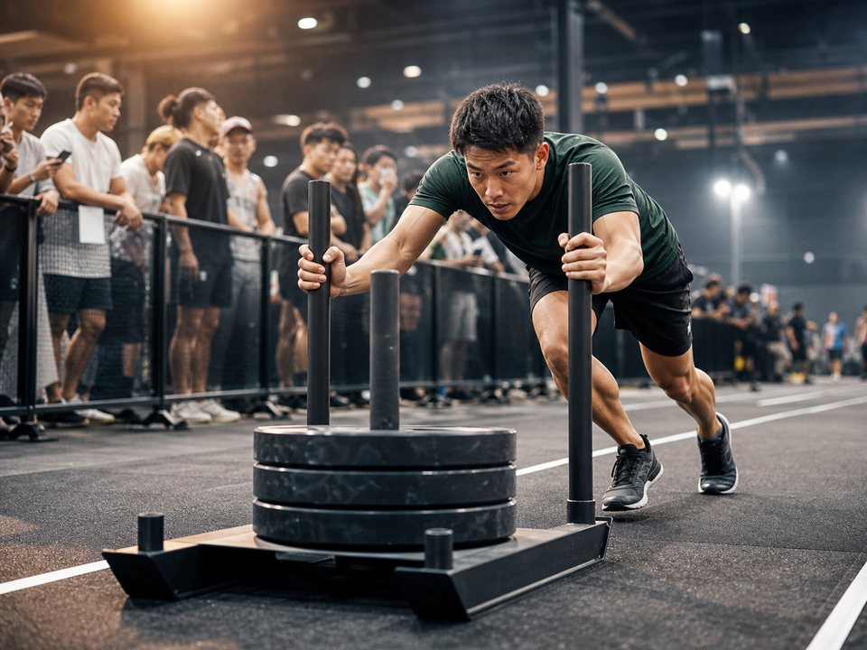

1. つま先を覆い、走れて踏ん張れるシューズ
公式ルール上、つま先を覆う靴が必要です。8kmのランをこなせる快適性、屋内床でのグリップ、ランジや方向転換での安定性を1足で確認します。
HYROX first race guide
HYROXは、1kmのランニングと1つのファンクショナルワークアウトを交互に8回行う屋内レース。シューズは「走りやすさだけ」でも「筋トレの安定性だけ」でもなく、両方を試して選ぶのがポイントです。

競技形式はHYROX公式「The Fitness Race」を参照。日本では2026年8月に千葉大会が開催され、公式サポートには大阪・名古屋の次回大会日程も掲載されています（2026年8月22日確認）。
公式形式は、1kmランの後にワークアウトステーションへ入り、この組み合わせを8回繰り返します。ステーションはSkiErg、Sled Push、Sled Pull、Burpee Broad Jumps、Rowing、Farmers Carry、Sandbag Lunges、Wall Ballsの順です。距離・重量・回数は部門で異なるため、申し込み前に最新ルールブックを確認してください。
初心者が見落としやすいのは、ワークアウト単体の強さより「脚や呼吸が乱れた状態で、もう一度走る」こと。装備もこの切り替えを邪魔しない物を選びます。
| 大会 | 日程 | 状況 |
|---|---|---|
| Chiba | 2026年8月6日〜9日 | 開催済み |
| Osaka | 2027年1月21日〜24日 | 次回大会として掲載 |
| Nagoya | 2027年4月16日〜18日 | 次回大会として掲載 |
日本初開催の横浜は1日、続く大阪は3日、千葉は4日開催でした。次期は大阪に加えて名古屋も掲載されており、国内で開催地域と規模が広がっていると読み取れます。販売開始日・参加費・部門は変わるため、HYROX公式の日本イベント一覧を確認してください。
公式ルール上、つま先を覆う靴が必要です。8kmのランをこなせる快適性、屋内床でのグリップ、ランジや方向転換での安定性を1足で確認します。
器具やサンドバッグに引っ掛かりにくく、汗を含んでも重くなりにくい物。普段のトレーニングで擦れが出ないか試します。
靴内で足が動きにくいフィットを選びます。厚さを変えるとシューズの感覚も変わるため、本番用の組み合わせで練習します。
レース後は汗冷えしやすいため、トップスとソックスの替えを用意。会場内外の待ち時間に着られる上着も便利です。
チケット、本人確認書類、同意書などは大会ごとに異なります。公開されるAthlete Guideと参加メールを基準にします。
会場への持ち込み、給水場所、受け渡しには規定があります。当日の自己判断ではなく、大会案内を確認してください。
商品名に「HYROX」と書かれているかより、次の3条件を同じ1足で満たせるかが重要です。
RUN
合計8kmを想定し、普段のランでかかと・土踏まず・指先に強い違和感が出ないこと。
WORKOUT
Sled Push/Pullを想定し、進行方向へ力を伝えやすいアウトソールか確認。
STABILITY
ランジ、キャリー、方向転換で足元が不安定にならないかを試します。
TEST
短いラン→ランジやローイング→再びラン、の順で使って判断します。
店内試着だけでは、汗をかいた状態やワークアウト後の感覚は分かりません。本番用ソックスと合わせ、複数回の複合練習で試します。
広告
ランニング表記があるモデル、またはジム・フィットネス用途が明記されたモデルから、レビュー件数37件以上の別モデルを選びました。HYROXでの使用感は当サイト未検証です。まず価格帯と用途で候補を絞り、短いランとランジなどを組み合わせた練習で適性を確かめてください。
価格・税表記・送料表記、レビュー件数・平均評価は2026年9月23日取得時点の楽天市場の集計値です。価格・在庫は変動します。
| 商品名 | 価格 | レビュー | 特徴の一言 |
|---|---|---|---|
| VeroMan FIT ppi-bftshoes | 2,980円（税込・送料別） | ★4.45（1,993件） | レビュー母数が最多のベアフット系 |
| 文屋良品 ベアフット トレーニングシューズ | 2,899円（税込・送料込） | ★4.47（123件） | ランニング・筋トレ表記あり |
| ナイキ フレックス コントロール TR4 | 10,120円（税込・送料別） | ★4.41（37件） | ジム・トレーニング用途のブランドモデル |
| ミズノ ウエーブダイバース LG LITE 2 | 7,200円（税込・送料込） | ★4.41（37件） | フィットネス・エアロビクス表記あり |
広告

こんな人におすすめ：2,980円の価格帯から検討したく、レビュー件数の多さを判断材料にしたい人。
注意したい点：送料別です。ベアフット・足袋タイプのため、合計8kmのランに合うか複合練習で確認が必要です。
商品名にトレーニング、フィットネス、筋トレ、ウォーキング用途の記載があります。今回の8候補ではレビュー件数が最も多く、購入者情報を比較しやすい候補です。
取得時価格：2,980円（税込・送料別）楽天市場の集計値：★4.45（1,993件）／2026年9月23日取得時点 楽天市場で最新情報を見る広告

こんな人におすすめ：3,000円未満かつ送料込の候補から、ランニングと筋トレの両用途表記がある商品を探す人。
注意したい点：ベアフット系で、商品名にはマリン用途も併記されています。屋内床とランでの適性は事前に確認してください。
商品名にフィットネス、ランニング、筋トレ用途が並ぶモデルです。レビューは123件あり、低価格帯の候補同士で比較する際の材料があります。
取得時価格：2,899円（税込・送料込）楽天市場の集計値：★4.47（123件）／2026年9月23日取得時点 楽天市場で最新情報を見る広告

こんな人におすすめ：送料込のベアフット系を探し、100件を超えるレビューも参照したい人。
注意したい点：水陸両用・マリン用途も併記されたモデルです。HYROXのランと屋内床への適性は実際の練習で確かめてください。
商品名にジム、フィットネス、トレーニング用途が明記されています。同価格の別モデルXZA32とは型番が異なるため、仕様とサイズ展開を商品ページで比較できます。
取得時価格：3,480円（税込・送料込）楽天市場の集計値：★4.57（125件）／2026年9月23日取得時点 楽天市場で最新情報を見る広告

こんな人におすすめ：ランニングと筋トレの用途表記があるベアフット系を、送料込で検討したい人。
注意したい点：商品名の「疲れない」など販売者側の表現は当サイトで検証していません。購入判断には使わず、試着と練習で確認してください。
XZA034とは別の商品コードを持つモデルで、ランニング、トレラン、筋トレの表記があります。レビューは103件あり、同ブランド内で比較する材料にできます。
取得時価格：3,480円（税込・送料込）楽天市場の集計値：★4.62（103件）／2026年9月23日取得時点 楽天市場で最新情報を見る広告

こんな人におすすめ：ベアフット系の中で、ジム・ウォーキング・フィットネス用途が明記された上位価格帯も比較したい人。
注意したい点：11,000円で、今回のベアフット系候補では高価格です。ランニング用途の明記はないため、合計8kmへの適性確認が欠かせません。
ジム、ウォーキング、フィットネス用途が記載され、洗えるインソールの表記もあります。レビュー87件は楽天市場の集計値で、当サイトによる使用評価ではありません。
取得時価格：11,000円（税込・送料込）楽天市場の集計値：★4.71（87件）／2026年9月23日取得時点 楽天市場で最新情報を見る広告

こんな人におすすめ：ワイド幅表記を手掛かりに、足幅を考慮して候補を絞りたい人。
注意したい点：商品名はウォーキング・トレーニング用途で、HYROXやランニング専用とは記載されていません。横ぶれや床でのグリップを練習で確認してください。
商品名にスポーツ、ジム、ウォーキング、トレーニングとワイド幅の記載があります。レビュー43件のため、母数がより多い候補の情報も併せて比較できます。
取得時価格：4,980円（税込・送料込）楽天市場の集計値：★4.35（43件）／2026年9月23日取得時点 楽天市場で最新情報を見る広告

こんな人におすすめ：ジム、筋トレ、フィットネス用途が明記されたブランドモデルを比較したい人。
注意したい点：送料別で、レビューは37件と他候補より少なめです。ランニング用途の明記もないため、8kmを含む練習で確認してください。
モデル名と型番が明確なトレーニングシューズです。販売商品名にあった期限付きクーポン文言は除き、継続して確認できるモデル情報だけを掲載しています。
取得時価格：10,120円（税込・送料別）楽天市場の集計値：★4.41（37件）／2026年9月23日取得時点 楽天市場で最新情報を見る広告

こんな人におすすめ：フィットネス・エアロビクス用途が明記されたユニセックスモデルを候補にしたい人。
注意したい点：レビューは37件と他候補より少なめで、ランニング用途の明記もありません。合計8kmに対応できるかは練習で判断してください。
ブランド、モデル名、型番が明確なフィットネスシューズです。7,200円・送料込という取得時条件を、ほかのブランドモデルと総額で比較できます。
取得時価格：7,200円（税込・送料込）楽天市場の集計値：★4.41（37件）／2026年9月23日取得時点 楽天市場で最新情報を見る| 形式 | 進め方 | 考え方 |
|---|---|---|
| Singles | 1人で全ラン・全ワークアウトを行う | 自分のペースで総合力を試したい人 |
| Doubles | 2人とも各ランを行い、ワークアウトを分担する | 得意種目を補い合いたい2人 |
| Relay | 4人でランとワークアウトを分担する | 1人あたりの担当量を抑え、チームで体験したい人 |
「初心者だから必ずRelay」という意味ではありません。制限時間、年齢条件、チーム構成、重量は大会と部門で確認し、自分の運動歴に合う形式を選びます。
公開されている日本語版25/26 Singlesルールでは、携帯電話、ヘッドフォン、ボディカメラなどはレースフロアで使用できません。一方、受付ではスマートフォンに表示したEチケットを使えます。受付後にスマートフォンをバッグへ戻せるよう、手荷物預けまでの動線を確認します。
| 場面 | 主な持ち物 | 注意 |
|---|---|---|
| 受付 | Eチケット／QR、本人確認書類 | 到着時刻と受付場所をAthlete Guideで確認 |
| バッグドロップまで | スマートフォン、私物飲料、着替え、タオル | 競技中に使わない物を預ける |
| レースフロア | 許可されたウェア・シューズ・任意装備 | 任意装備は原則、最初から最後まで自分で保持 |
| レース後 | 替えの服・ソックス、上着 | 汗冷えする前に着替える |
上記は2026年8月22日に確認できた25/26日本語ルールを基準にしています。大阪・名古屋を含む26/27大会では、最新Rulebook、Technical Briefing、Athlete Guideの順に再確認してください。
1人で挑むSingles、2人でワークアウトを分担するDoubles、4人で分担するRelayがあります。運動歴と一緒に出る人数を基準に、最新の参加条件を確認してください。
必須ではありません。走りやすさ、床でのグリップ、ワークアウト時の安定性を普段の練習で確認できる1足を選びます。
公式形式では合計8km走るため、ランニングへの準備も必要です。少量の複合練習から始め、体調に合わせて無理なく進めます。
競技条件は変更される場合があります。本記事より、参加する大会の最新ルールブックとAthlete Guideを優先してください。